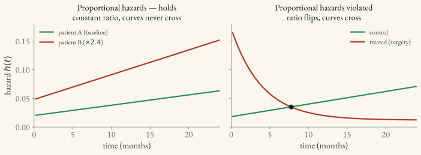

Cox Proportional Hazards Loss
The Cox PH loss is the most widely used loss function in survival analysis, based on the partial likelihood introduced by Cox (1972). This page builds it up from the model, then derives the loss, then states the assumption it rests on. If you only need to use it, skip to Key takeaways.
Model
The hazard for patient i at time t is the baseline hazard scaled by a per-patient multiplier:
\underbrace{h(t \mid x_i)}_{\text{patient } i\text{'s hazard at } t} \;=\; \underbrace{h_0(t)}_{\text{baseline hazard}} \;\times\; \underbrace{\exp(\beta^\top x_i)}_{\text{patient's risk multiplier}}
Spelling out each symbol:
- x_i — patient i’s covariate vector: their features stacked into a list, e.g.
[age, tumor_size, biomarker]. The subscript i labels which patient. - \beta (beta) — the coefficient vector: one learned weight per feature. Each \beta_k says how strongly feature k pushes risk up (\beta_k > 0) or down (\beta_k < 0) — the survival analog of regression coefficients.
- \beta^\top x_i — the superscript \top means transpose, turning the product into a dot product \beta_1 x_{i1} + \beta_2 x_{i2} + \dots The result is one number: the patient’s linear predictor or risk score (a log-hazard; see
1.5). - \exp(\cdot) — the exponential keeps the multiplier positive. \exp(\beta^\top x_i) is the hazard ratio: how many times higher (>1) or lower (<1) this patient’s hazard is than baseline. \exp(0) = 1 means “same as baseline.”
- h_0(t) — the baseline hazard: the hazard over time for the chosen reference covariate vector (\beta^\top x = 0). If zero is not a meaningful feature profile, center the covariates before interpreting this baseline. Its shape is left unspecified—see Semi-parametric below.
Worked example — reading a risk score. One standardized biomarker x_i = 1.5 with coefficient \beta = 0.4 gives a linear predictor \beta^\top x_i = 0.4 \times 1.5 = 0.6. The hazard ratio is \exp(0.6) \approx 1.8 — patient i’s hazard is about 1.8× the baseline at every time point.
Two different T’s. The superscript \top means transpose (a linear-algebra operation). It is not the survival time T from
1.2— same letter, unrelated meaning.
Why “semi-parametric”
The baseline hazard h_0(t) is left unspecified, which makes Cox semi-parametric — part parametric, part non-parametric:
- The covariate effect \exp(\beta^\top x) is parametric: a fixed, finite set of coefficients \beta, one per feature.
- The baseline h_0(t) is non-parametric: an arbitrary function of time with no assumed shape (the same “no equation for the shape” sense as the estimators in
1.1).
So Cox commits to how covariates scale risk but stays agnostic about the shape of risk over time. Fully parametric alternatives (e.g. the DSM mixture in 2.4) instead assume a shape for the time axis too.
Why model the hazard, not survival?
The lowercase h is the instantaneous hazard — the rate of the event at t given survival so far, the “speedometer” of 1.1 — not the cumulative hazard H(t)=\int_0^t h. Cox models the hazard rather than the survival function S(t) for two reasons:
- Clean multiplier. Covariates enter as a constant factor \exp(\beta^\top x) on the baseline. On the survival scale the same effect becomes the messier S(t)^{\exp(\beta^\top x)}.
- The baseline cancels. Because every patient shares the same h_0(t), it drops out of the partial likelihood below — the trick that lets Cox estimate \beta without ever specifying the baseline.
Nothing is lost: S(t), h(t), and H(t) are interconvertible (S=e^{-H}, H=\int h), so the survival curve can be recovered afterward.
How the survival curve is recovered. The packages’
predict_survival_functioncall (see the output table in1.5) does this: once \beta is fixed, it estimates the dropped baseline non-parametrically from the data (the Breslow estimator) and combines it with each patient’s risk, S(t\mid x)=S_0(t)^{\exp(\beta^\top x)}. Fit on the hazard scale, then assemble the probability curve afterward.
Partial Likelihood
The idea
A full likelihood for survival data would need the baseline hazard h_0(t) — the actual shape of risk over time. Cox’s trick is to estimate \beta without ever specifying h_0(t), using only the information that does not depend on it. That reduced quantity is the partial likelihood.
It works by asking, each time an event occurs: given that exactly one subject failed at this moment, what is the probability it was this particular subject?
\underbrace{P\big(i \text{ fails} \mid \text{one failure in } R(t_i)\big)}_{\text{prob. it was patient } i} \;=\; \frac{\overbrace{\exp(\beta^\top x_i)}^{\text{patient } i\text{'s risk}}}{\underbrace{\sum_{j \in R(t_i)} \exp(\beta^\top x_j)}_{\text{total risk of everyone still at risk}}}
This is a softmax over the risk set: patient i’s own risk scored against the pooled risk of all the candidates, giving i’s share of the total. (That softmax form is exactly why the deep-learning version is just a log-softmax loss.)
The risk set R(t_i) is everyone still at risk just before time t_i:
R(t_i) = \{\, j : T_j \ge t_i \,\} \quad\text{— subjects who have neither had the event nor been censored yet.}
Mind the capitalization: t_i (lowercase) is a specific moment — when subject i had their event — while T_j (capital) is subject j’s own observed time (the survival time T from the (T, δ) notation in 1.2). So T_j \ge t_i means “j was still being followed at the instant i failed.” The pool only ever shrinks: a subject drops out of all later risk sets once they have their event or are censored.
Worked example — who’s in the risk set. If patient i fails at t_i = 10 months: - a patient with T_j = 15 is in the set (still followed at month 10), - a patient with T_j = 6 is not (already left by month 10).
The cancellation. Each subject’s hazard is h_0(t)\exp(\beta^\top x_j), so the shared h_0(t_i) cancels between numerator and denominator. That cancellation is exactly what removes the baseline hazard from the estimation.
The loss
Multiply the per-event conditional probabilities across all observed events and take the negative log:
L(\beta) = -\!\!\sum_{i\,:\,\delta_i = 1} \Big[\, \underbrace{\beta^\top x_i}_{\text{patient } i\text{'s log-risk}} \;-\; \underbrace{\log\!\Big(\textstyle\sum_{j \in R(t_i)} \exp(\beta^\top x_j)\Big)}_{\text{log-total-risk over the risk set}} \,\Big]
where:
- \sum_{i:\delta_i=1} — sum over observed events only (\delta_i = 1). Censored subjects (\delta_i = 0) never get their own term.
- R(t_i) — the risk set, as above.
A censored subject still appears in the risk sets (denominators) of earlier events, so its follow-up still contributes — it just never supplies a numerator.
Worked example — three patients. A fails first, then B, while C is censored. The partial likelihood is: \big[\text{A's softmax over } \{A, B, C\}\big] \;\times\; \big[\text{B's softmax over the shrunken } \{B, C\}\big] C contributes only to denominators, never a numerator.
Why “partial”
It is partial because it deliberately discards information about the spacing between event times: the risk sets depend on their ordering, while the time scale is absorbed into the baseline hazard. The partial-likelihood fit estimates relative risk. Absolute survival probabilities require the additional baseline-survival estimate described above and should be checked for calibration.
When several events share the same recorded time, the simple expression above is not sufficient on its own. Software uses a tie approximation such as Breslow or Efron; record the choice because it can matter when times are heavily rounded.
The proportional-hazards assumption
Take the model and form the ratio of hazards for two patients i and j:
\frac{h(t \mid x_i)}{h(t \mid x_j)} = \frac{h_0(t)\exp(\beta^\top x_i)}{h_0(t)\exp(\beta^\top x_j)} = \frac{\exp(\beta^\top x_i)}{\exp(\beta^\top x_j)}
The baseline h_0(t) cancels, leaving a ratio with no t in it. Thus, patient i remains the same multiple as risky as patient j throughout follow-up. Their hazards do not cross (except where both are zero); they appear parallel on a log-hazard scale. That constant-ratio property is what “proportional hazards” means.
Worked example — when PH breaks. A surgery with high early risk (operative complications) but a protective effect later: the treated and untreated hazard curves cross. No single constant ratio fits, so PH is violated. This is exactly the limitation flexible models like DeepHit (
2.4) escape by not assuming any hazard form.

Other properties:
- Does not require specifying the baseline hazard.
- Outputs a log-hazard (risk score), not a probability.
In Deep Learning
Replace the linear predictor \beta^\top x with a neural-network output \varphi(x) — a single scalar log-hazard per subject. The loss is unchanged (negative log partial likelihood). This is DeepSurv.
Key takeaways for applied ML scientists
If you just need to train and use a Cox model — not derive it — these are the points that matter:
- Output is a risk score, not a probability. The model emits one number per patient (a log-hazard); higher means higher risk. It’s a ranking. To get actual survival probabilities S(t \mid x), call
predict_survival_function(it fills in the baseline via the Breslow estimator). - The loss is a log-softmax over the risk set. Each event “competes” against everyone still at risk at that moment. In deep learning you just feed your network’s scalar output into the Cox loss — no need to handle the baseline yourself.
- It assumes proportional hazards. Relative risk between two patients is constant over time. If a covariate’s effect flips over time (e.g. surgery: harmful early, protective late), Cox is mis-specified — reach for DeepHit instead.
- Evaluate with the C-index. Because the output is a ranking, the natural metric is rank-based concordance, not a probabilistic score.
- Mind the mini-batch approximation. The exact loss uses the full risk set; an ordinary random mini-batch changes that denominator and therefore the objective. Use full-batch or risk-set-aware training when feasible. For large datasets,
CoxCCsamples controls from the risk set for each event and optimizes a case-control approximation designed for SGD.
Implementation
The Cox loss is available at every altitude. Pick by how much you own the training loop.
torchsurv — raw differentiable loss for a custom PyTorch model (the custom 3D-imaging case; see 04_packages/4.3_torchsurv.md):
from torchsurv.loss import cox
log_hz = model(x) # network output: one log-hazard per subject
loss = cox.neg_partial_log_likelihood(log_hz, events, times)pycox — packaged DeepSurv (CoxPH) or memory-efficient CoxCC (see 04_packages/4.1_pycox.md):
import pycox.models as models, torchtuples as tt
net = tt.practical.MLPVanilla(in_features, [64, 64], out_features=1)
model = models.CoxPH(net, tt.optim.Adam) # or models.CoxCC(net, tt.optim.Adam)
model.fit(x_train, (durations, events), epochs=100)
CoxPHvsCoxCC.CoxPHuses the partial-likelihood risk sets available to the fit;CoxCCuses a case-control approximation with sampled controls. The latter scales more naturally to SGD and underpins pycox’s non-proportionalCoxTimemodel. See Key takeaways.
lifelines — classical Cox on tabular data, full statistical summary (see 04_packages/4.2_lifelines.md):
from lifelines import CoxPHFitter
CoxPHFitter().fit(df, duration_col="T", event_col="E").print_summary()scikit-survival — regularized/penalized Cox inside an sklearn pipeline (see 04_packages/4.4_scikit_survival.md):
from sksurv.linear_model import CoxPHSurvivalAnalysis
CoxPHSurvivalAnalysis().fit(X_train, y_train) # y_train is a structured (event, time) array